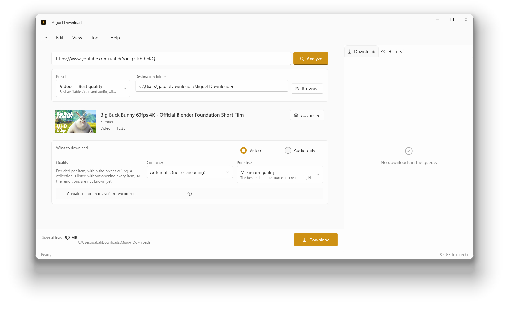

Paste a link.
Get the file.
A video and music downloader for Windows. It offers only the formats that site actually publishes, and checks the result before it says the job is done.

A video and music downloader for Windows. It offers only the formats that site actually publishes, and checks the result before it says the job is done.

Every downloader promises maximum quality. This one shows the list of formats the site answered with, downloads what you chose, and only marks it finished after opening the file and confirming it plays.
What it does
FORMATS
Resolution, codec, subtitles and audio tracks come from the site's own answer. If that video has no 4K, 4K is not in the list for you to pick and be disappointed by later.
VERIFICATION
Once the transfer ends, ffprobe opens the file and confirms it decodes. If it shows as finished, it plays.
COLLECTIONS
Playlists, albums and channels are listed item by item, and you tick what you want before it starts. Tested with five thousand items in one queue.
PRIVACY
No telemetry, no account, no identifier. Settings and history stay on your computer. Read the policy.
What it does not do
So here is the other half of the list, on the front page, not buried in the footer.
Spotify, Apple Music, TIDAL and Amazon encrypt their audio. The program reads those platforms' public catalogue and looks for the recording where audio is served openly. It breaks nobody's encryption.
HDR belongs to the source. Where a site publishes SDR only, the HDR control does not appear, and no option promises a resolution the video does not have.
Sites change without warning. When one does, the bundled extractor is updated and it works again. Until then, that address can fail.
Measured, not copied
Link recognition is not a closed list: the bundled yt-dlp carries 1,752 extractors, and an unknown address is attempted rather than refused. The table is what was checked by hand.
| Site | Analysis | Download | What the source delivers |
|---|---|---|---|
| YouTube | yes | yes | separate video and audio, up to 2160p60, HDR10 |
| YouTube Music | yes | yes | audio, metadata and cover art |
| TikTok | yes | yes | video with audio already muxed, up to 1024p |
| X (Twitter) | yes | yes | separate video, no login for a public post |
| yes | yes | separate video and audio (VP9) | |
| yes | yes | separate video and audio | |
| SoundCloud | yes | yes | audio only, opens in the music flow |
| needs a session | with cookies | login required on most posts | |
| Vimeo | needs a session | with cookies | the web client refuses anonymous access |
Download
Download sites are where one file is most often swapped for another. Here is the checksum of what was published, so you can compare it with what arrived.
Portable version (194.2 MB) All releases Source code
The installer is not code-signed yet, so Windows shows a SmartScreen warning the first time. Click More info, then Run anyway.
f1203120db6c1f5518a5b4b233adba447f855e70151388b95a32d43623ab0b24
Get-FileHash .\MiguelDownloaderApp-win-Setup.exe -Algorithm SHA256